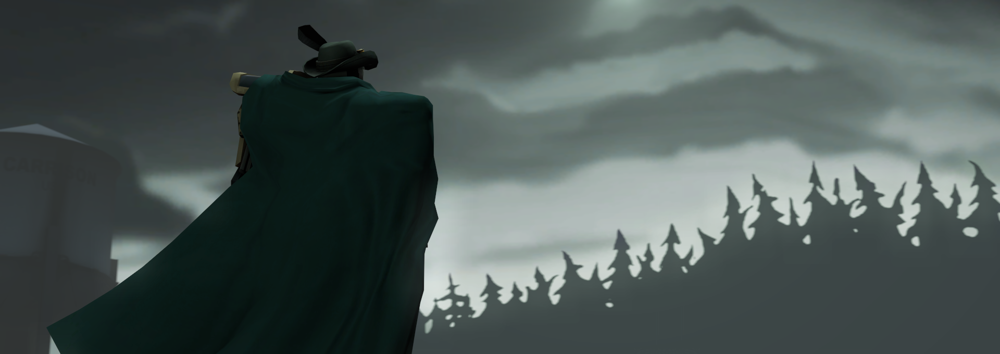

A Hobby Turned Professional
 The Source engine was created on October 2004 and is the core of many iconic Valve games such as
Half Life, Portal, and Team Fortress 2. The engine is also known for allowing players to easily mod Source games, though it may require some tools.
The Source engine was created on October 2004 and is the core of many iconic Valve games such as
Half Life, Portal, and Team Fortress 2. The engine is also known for allowing players to easily mod Source games, though it may require some tools.
I utilize Source Filmmaker and Garry's Mod in a rather unusual way. Garry's Mod acts as a base for me to create bosses and complex weapons while Source Filmmaker is used to created animated story bits to compliment the featured creation. Though I don't get paid for my work, I continue to push myself to improve on my skills.